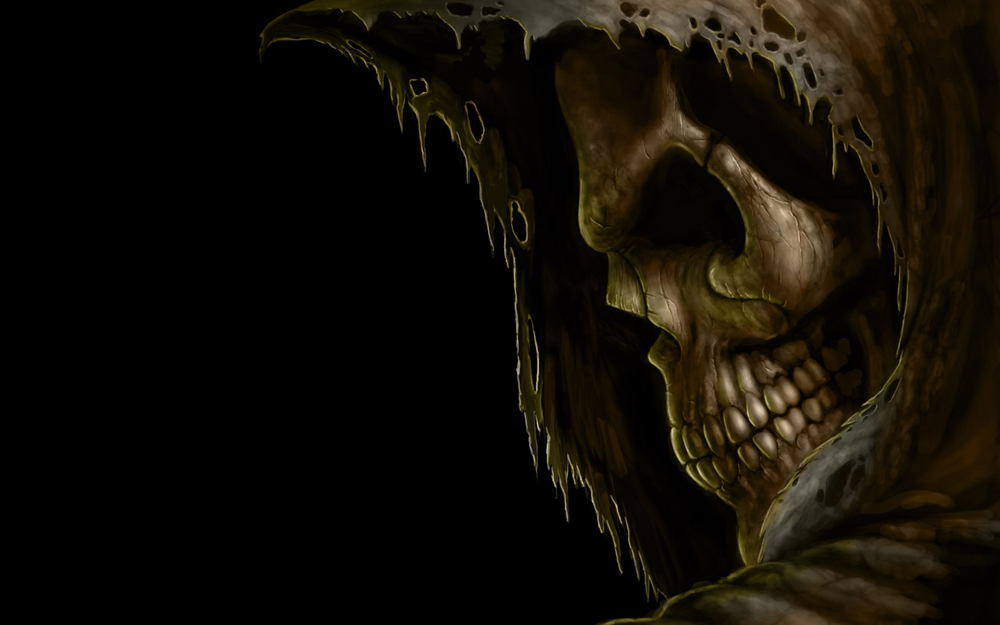

A senhora da madrugada.
Ela é sinistra A ideia de um corpo tão massivo que nem a luz poderia escapar foi brevemente proposta pelo pioneiro astronômico
e clérigo inglês John Michell em uma carta publicada em novembro de 1784. Os cálculos simplistas de Michell
supunham que esse corpo pudesse ter a mesma densidade que o Sol e concluíram que esse corpo se formaria quando
o diâmetro de uma estrela excedesse o do Sol por um fator de 500 e a velocidade de escape da superfície excedesse
a velocidade usual da luz. Michell observou corretamente que esses corpos supermassivos, mas não irradiantes, podem
ser detectados por seus efeitos

gravitacionais em corpos visíveis próximos. Os estudiosos da época ficaram inicialmente
empolgados com a proposta de que estrelas gigantes, mas invisíveis, pudessem estar escondidas à vista de todos, mas o
entusiasmo diminuiu quando a natureza ondulatória da luz se tornou aparente no início do século XIX.
Se a luz fosse uma onda e não um "corpúsculo", não está claro o que, se houver, influenciaria a gravidade na fuga das
ondas de luz. A relatividade moderna desacredita a noção de Michell de um raio de luz disparando diretamente da superfície
de uma estrela supermassiva, sendo desacelerado pela gravidade da estrela, parando e caindo livremente de volta à superfície da estrela.